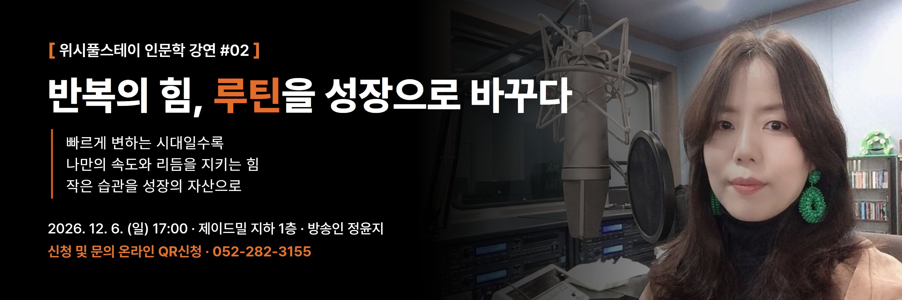

모집 중강연명반복의 힘, 루틴을 성장으로 바꾸다
강연 소개
“나를 나답게 만드는 비밀”
우리는 늘 나답게 살고 싶다고 말합니다. 그래서 남들이 좋다는 길을 따라가 보기도 하고, 인생을 단번에 바꿔 줄 큰 계기를 기다리기도 합니다. 어쩌면 우리는 너무 멀리서, 너무 거창한 모습으로만 나다움을 찾고 있었는지도 모릅니다.
나를 나답게 만드는 비밀은 의외로 가까이 있습니다. 타고난 특별함이 아니라 매일의 작은 반복과 습관, 그리고 나만의 루틴입니다. 아침을 여는 첫 행동, 크지 않지만 묵묵히 지켜 온 나만의 약속들이 차곡차곡 쌓여 나라는 사람을 만듭니다. 반복해 온 습관은 나의 취향이 되고, 취향은 정체성이 되어 나만의 가치를 만들어 냅니다.
루틴은 채찍이 아니라 나를 지키는 기준입니다
습관이나 루틴이라고 하면 나를 엄격하게 몰아세우는 일부터 떠올리기 쉽습니다. 하지만 이번 강연에서 말하는 루틴은 남보다 앞서기 위한 채찍이 아니라, 흔들리는 일상 속에서 나를 지켜 주는 기준에 가깝습니다. 가볍고 작기 때문에 매일 이어갈 수 있고, 어긋난 날에도 자책 없이 다시 제자리로 돌아올 수 있습니다.
빠르게 변하는 시대일수록 남의 속도를 따라가기보다 나만의 속도와 리듬을 지키는 일이 더 중요합니다. 사소한 습관 하나가 하루에 자리 잡을 때, 삶은 요란하지 않아도 분명하게 달라지기 시작합니다.
이번 강연에서 나누는 이야기
새로운 문화와 기술들이 빠르게 만들어지는 시대가 도래했지만, 오히려 나의 색은 점점 더 옅어지고 사라져 가는 시대.
반복되는 일상 속의 작은 행동과 습관들이 어떻게 나를 만들고 성장하며 가치 있게 만드는 걸까요?
커피 한 잔이 창작의 루틴이 되었던 작가들, 매일의 선택과 감각으로 세계적인 브랜드를 만든 사람들의 이야기를 통해 작은 반복이 어떻게 한 사람의 색깔이 되는지, 20년 넘게 라디오 방송을 진행해 오신 정윤지 씨가 들려줍니다.
오늘 기꺼이 반복하기로 선택한 사소한 한 가지가, 내일의 나를 가장 나답게 만들어 갑니다.
연사 · 방송인 정윤지
20년 넘게 방송을 해 온 방송인이자 인문학 강사입니다. ubc울산방송 라디오 「행복한 네시」를 구성하고 진행하며, 2025년 한국방송대상 지역방송진흥상을 받았습니다. 도서관과 문화 공간에서 시민들과 함께하는 인문학 강연도 꾸준히 이어 오고 있습니다.
이런 분께 권합니다
- 나를 나답게 만드는 것이 무엇인지 생각해 보고 싶은 분
- 큰 결심보다 매일 이어갈 수 있는 작은 습관을 찾고 싶은 분
- 바쁜 일상 속에서도 나만의 속도와 리듬을 지키고 싶은 분
- 커피 한 잔처럼 사소한 습관에서 나만의 취향을 발견하고 싶은 분
- 한 해를 마무리하는 12월의 일요일 저녁, 바다 가까운 곳에서 새해를 그려 보고 싶은 분
진행 순서
- 16:40접수명단을 확인하고 지정된 자리로 안내해 드립니다.
- 17:00방송인 정윤지 강연「반복의 힘, 루틴을 성장으로 바꾸다」를 주제로 이야기를 나눕니다.
- 17:45나의 루틴 한 줄신청하실 때 남겨 주신 새해 루틴을 함께 나눕니다.
- 18:00소감과 질문커피 한 잔을 앞에 두고, 오늘 이야기에 대한 소감과 궁금한 점을 방송인 정윤지와 편하게 나눕니다.